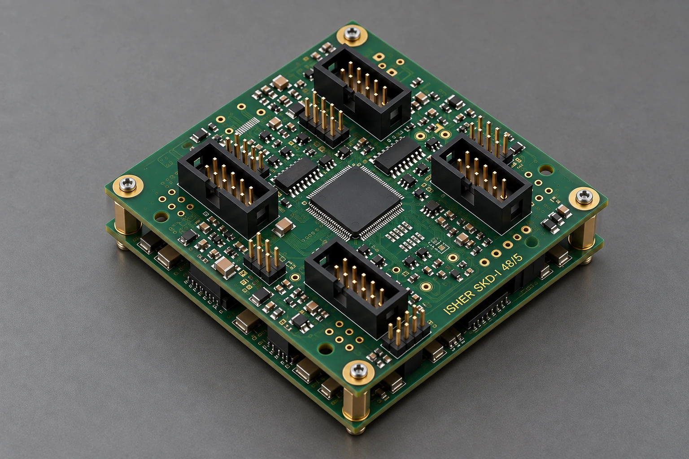
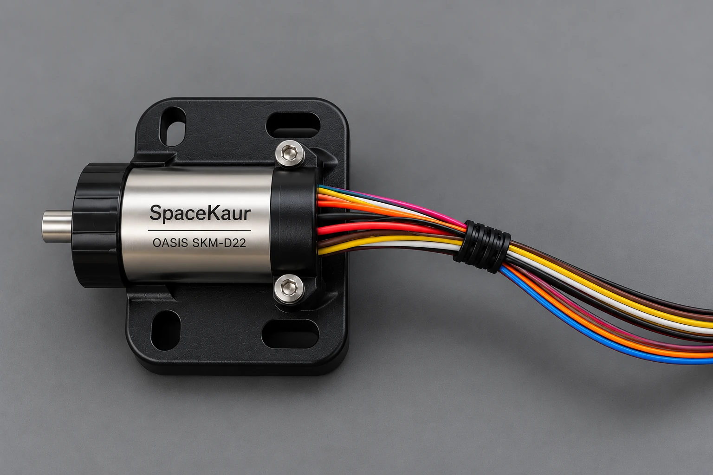

Servo Drive
ISHER
SKD-I 48/5
Servo drive development for position control applications.
Discuss your application
Servo drives, software and precision motors.
Developed together for motion control.
Servo Drive
SKD-I 48/5
Servo drive development for position control applications.
Discuss your application
Control Algorithm & Firmware
SKD-I 48/5
Control algorithms and embedded firmware, developed together with the hardware.
Discuss your applicationHigh Precision Motor
SKM-D22
Precision actuation for autonomous space and aerospace systems.
Discuss your application